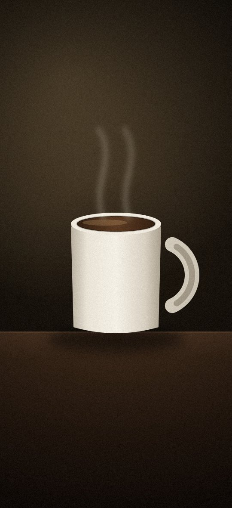

Acorde com movimento, não só com som.
O WakeWalk é o despertador que garante que você sai da cama: ele só desliga quando você completa uma missão de movimento. Impossível voltar a dormir.
Três passos entre você e a cama desfeita
Configure uma vez. Toda manhã o WakeWalk transforma o acordar num pequeno desafio que você sempre vence.
Crie o alarme
Escolha o horário, os dias da semana, o som e a missão. Recorrência total no seu controle.
Ele toca de manhã
Um amanhecer luminoso e um som que não dá pra ignorar. Soneca só se você quiser — e nada de soneca infinita.
Mexa-se pra desligar
Caminhe os passos pedidos ou fotografe o objeto certo. Só aí o alarme silencia — e você já está de pé.
Conte passos de verdade, na dose que você escolher
Os sensores do celular contam cada passo. Escolha a dificuldade e o WakeWalk ajusta quantos passos você precisa dar pra silenciar o alarme.
- Contagem por sensorAcelerômetro e podômetro detectam movimento real — não adianta chacoalhar o celular.
- Meta adaptávelDe um passeio curto a uma caminhada que te acorda de vez.
- Anel de progresso ao vivoVeja os passos subirem em tempo real até o amanhecer da tela.

Sem a foto certa, o alarme não para
Para alarmes ainda mais à prova de preguiça, o WakeWalk pede uma foto de um objeto do dia a dia. Você precisa levantar, ir até ele e fotografar — reconhecimento na hora.
- Objeto aleatórioPia, escova de dentes, cafeteira… ele sorteia algo que te tira do quarto.
- Reconhecimento na câmeraA IA confirma o objeto antes de liberar — nada de foto da parede.
Construa uma sequência que você não quer quebrar
Cada manhã vencida acende o fogo. Veja sua sequência crescer dia após dia e supere o seu recorde — a motivação que faz o hábito grudar.
Seu progresso, em números que motivam
O WakeWalk acompanha cada despertar e transforma em tendências claras: horário médio, passos, consistência e a evolução semana a semana.
Cada marco vira uma medalha
Desbloqueie conquistas conforme avança — pequenas recompensas que celebram cada hábito construído.
Madrugador
7 dias seguidos antes das 7h
Maratonista
10.000 passos em missões
Inquebrável
30 dias de sequência
Lenda do amanhecer
100 manhãs vencidas
Durma melhor pra acordar melhor
O ciclo do bom despertar começa à noite. Defina sua hora de dormir, siga ciclos de sono de 90 minutos e adormeça com uma biblioteca de sons relaxantes.
- Lembrete de dormirUm empurrãozinho na hora certa para você descansar o suficiente.
- Ciclos de 90 minutosSugestões de horário alinhadas aos seus ciclos de sono.
- Sons relaxantesChuva, floresta, ondas e mais — com timer pra desligar sozinho.
Uma rotina pra cada dia da semana
Defina horários diferentes para dias úteis e fins de semana, ative só os dias que importam e deixe o WakeWalk cuidar da consistência por você.
- Por dia da semanaSelecione exatamente em quais dias cada alarme toca.
- Vários alarmesAté 2 no plano grátis e ilimitados no Premium, cada um com sua própria missão.
- Próximo alarme em destaqueA tela inicial sempre mostra quanto falta pro próximo toque.
Comece grátis. Vá de Premium quando quiser.
O plano grátis não expira e não tem anúncios. O Premium libera as missões com câmera, alarmes ilimitados e missões em sequência.
- Até 2 alarmes
- Missões de passos, matemática, digitação e chacoalhar
- Estatísticas, sequência e conquistas
- Modo Sono e briefing matinal
- Tudo do plano grátis
- Flexão, agachamento, foto e QR code pela câmera
- Alarmes ilimitados
- Até 3 missões em sequência
O teste grátis de 7 dias vale para novos assinantes do plano anual: a loja pede uma forma de pagamento para iniciar e, se você cancelar antes do fim, não há cobrança. A assinatura é cobrada pela Google Play ou App Store e renova automaticamente — cancele quando quiser nas configurações da loja. O vitalício é uma compra única, sem renovação.
Sua próxima manhã começa de pé.
Baixe o WakeWalk e transforme o acordar num hábito que gruda.